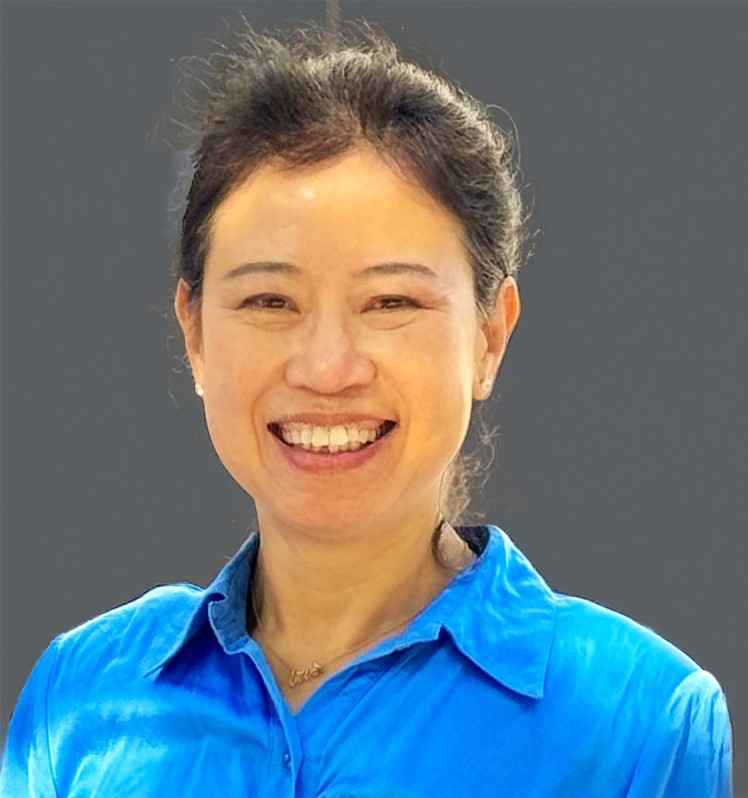
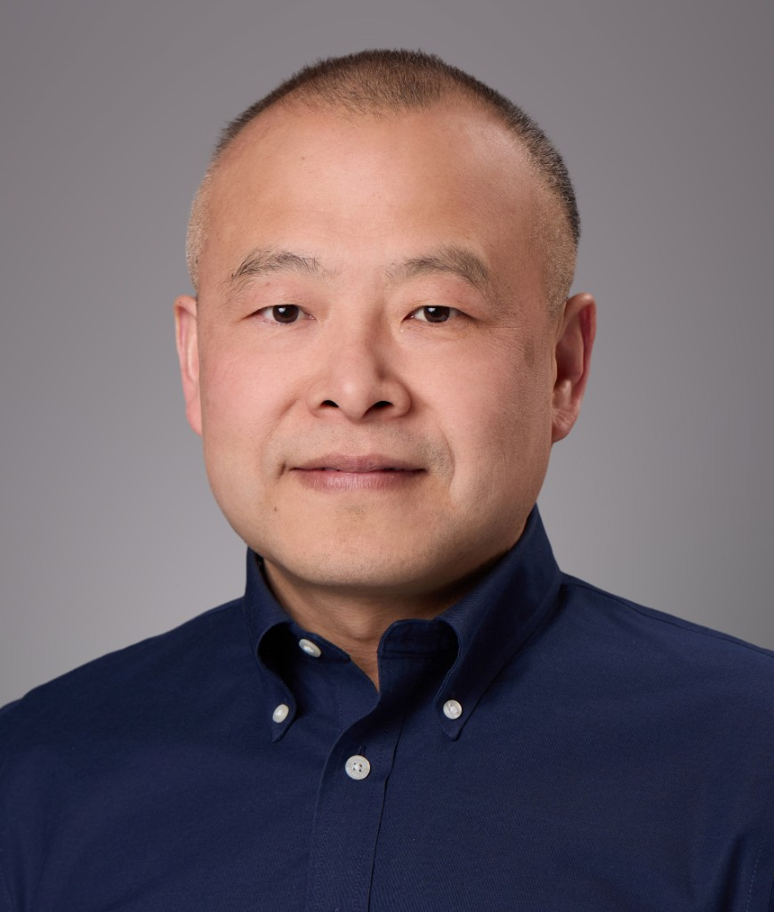
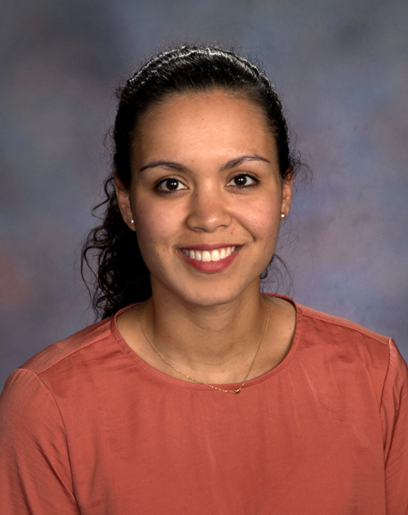
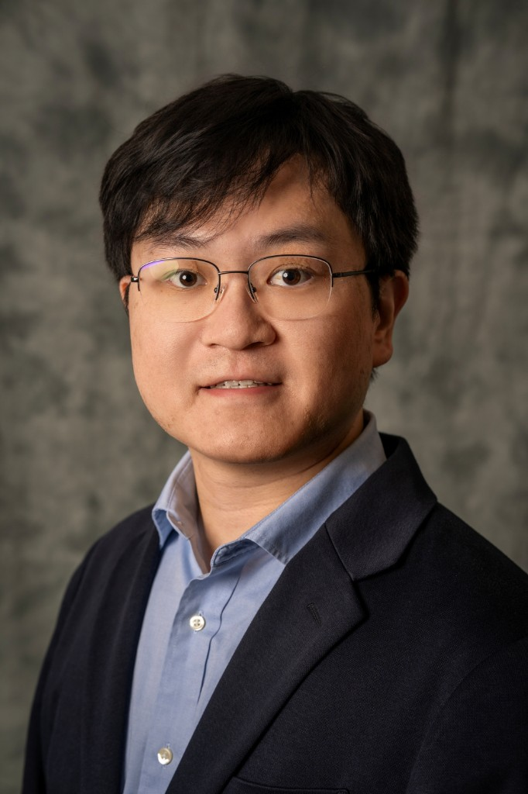
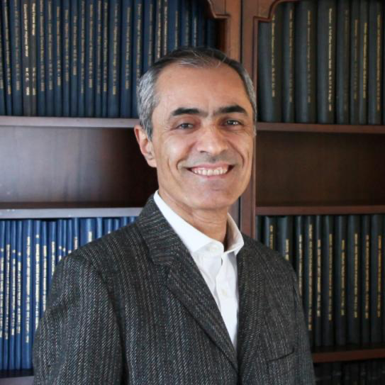

Hamid Jafarnejad Sani
Assistant Professor of Mechanical Engineering
Stevens Institute of Technology


Click any card to view the full bio.
EARS-CONN brings together researchers, engineers, and industry leaders across embodied-AI, remote sensing, Digital-Earth infrastructure, and urban insurance intelligence. A dedicated track examines how Digital-Earth — powered by the combination of satellite data and ground-level robotic sensing — enables proactive hazard prediction, property-specific risk assessment, and next-generation insurance for climate-exposed cities. Speakers span academia, government, and industries including robotics, telecommunications, insurance, and financial risk.
Assistant Professor of Mechanical Engineering
Stevens Institute of Technology

CUNY Distinguished Professor
The City College of New York
Herbert G. Kayser Professor of Computer Science
The City College of New York

Professor, Mechanical & Aerospace Engineering
Rutgers University

Assistant Professor, Civil & Environmental Engineering
Rowan University

Distinguished Research Scientist, NOAA-CESSRST
The City College of New York

Professor, Electrical Engineering, CCNY — robotics expert
The City College of New York

Assistant Professor
Department of Civil Engineering, Stony Brook University

Professor, Civil, Urban, and Environmental Engineering
New York University — C2SMART
Assistant Professor, Technology Management and Innovation & CUSP, NYU Tandon
New York University
Safety Architect with a Ph.D. in Control Systems, specializing in autonomous systems
Qualcomm
Chief Executive Officer
PureCipher
Chief Data Officer, First Street Foundation
Climate-related Financial Risk Advisory Committee
Global Head of Climate Advisory
J.P. Morgan

Robotics Research Scientist
Nokia Bell Labs